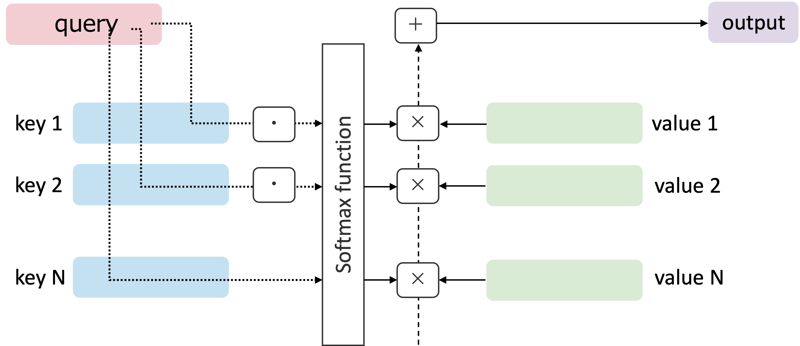

Transformers#
この章では、現代的な自然言語処理（NLP）における重要なアーキテクチャである トランスフォーマー（Transformers） について、自己注意機構（Self-Attention Mechanism） を中心に解説する。 解きたいタスクに応じて、様々な形で応用されているが、それらに共通する基本的な仕組みを理解することがこの章の目標となる。
Attention Mechanism (注意機構)#
Transformerの中核をなすのが 注意機構（Attention Mechanism） である。注意機構は、入力データの中で重要な部分に焦点を当てるための仕組みであり、特に自然言語処理においては、文脈情報を効果的に捉えるために利用される。
データの表現方法の章でも少し触れたように、文章中の単語の意味は、その周囲の単語によって大きく影響を受ける。例えば、「bank」という単語は、「river」や「money」といった周囲の単語によって、その意味が「川岸」や「銀行」に変わる。
I sat by the bank of the river.（私は川の岸辺に座った。）I went to the bank to deposit some money.（私はお金を預けるために銀行に行った。）
このような文脈依存性を捉えるために、注意機構は各単語が他の単語に対してどれだけ重要であるかを計算し、その情報を基に重み付けを行う。 ある意味で、単語の意味というのは動的 (dynamic)であって、必ずしも静的(static) なものではないとも言える。
アテンション機構は、以下の3つの主要なコンポーネントから構成される。
クエリ (Query): 注目したい要素を表すベクトル。
キー (Key): 各要素の特徴を表すベクトル。
バリュー (Value): 実際の情報を含むベクトル。
ネットワークの中でも用いられるAttentionレイヤーは、これらのクエリ、キー、バリューを用いて、各要素が他の要素に対してどれだけ注意を払うべきかを計算する。
この式は、有名なAttention is All You Need 論文で登場する最初の式で、Scaled Dot-Product Attentionと呼ばれるものである。 なお、\(d_k\)はキーの次元数であり、スケーリングにより勾配消失問題を軽減する役割を果たす。
まずは、この式の意味するところを順を追って説明しよう。 元々が自然言語処理の文脈で提案されたものであるため、多くの論文・書籍なども文章を例にして説明している。 筆者のように、自然言語処理のバックグラウンドを持たない人にとっては、トークンなどの用語が出てきて面食らってしまうことも多いように思う。そこで、ここではあえて「ラーメン愛好家のラーメン採点」という例を用いて説明することにする。その後、抽象的なベクトルデータを例にしてより一般的な説明を行う。
ラーメン愛好家のラーメン採点
Aさんはラーメン愛好家であり、様々なラーメン店を訪れては、その味を日々採点している。Aさんは、ラーメンを幾つかの項目で数値化して記録している。
例えば、スープの系統(醤油、味噌、塩、豚骨など), 価格, 麺の量, 提供スピード, 麺の太さ, トッピングの豊富さ, 店の雰囲気などである。ただし、Aさんは自分自身が、ラーメンの評価、いわば 総得点 を、それらの項目の単純な和ではなく、もっと複合的に評価していることに気づいた。以来、ラーメン以外の要素、例えばその日の天気や昼に行った運動の有無、前日の睡眠時間なども、つぶさに記録を残すようにした。
このことから、ラーメンの総得点は、各項目の評価点の単純な総和ではなく、Aさん自身も言語化できない複雑な基準に基づいて決定されていることになる。 Aさんのラーメン記録はブログにまとめられており、次に訪れる予定のラーメン店のリストも公開されている。このブログを偶然訪問したBさんは、Aさんの過去のラーメン記録を分析し、次にAさんがブログを更新した際、記事の途中にある項目の評価点から、総得点を予測する遊びを考えた。Bさんは、以下のようにモデルを構築・訓練していく。
これまでのラーメン記録に基づいて、各項目の評価点をベクトルとして表現する。
Aさんが今後更新するブログに記載される新たなラーメン店の(総得点以外の)項目を クエリ/query (Q) として使用する。
これまでのラーメン記録の各項目の評価点を キー/key (K) として使用し、総得点を バリュー/value (V) として使用する。
新たなラーメンのクエリに対して、過去のラーメン記録のキーとの 類似度 を計算し、その類似度に基づいてバリューを重み付けして総得点を予測する。その際、類似度の計算にはドット積(内積)を用い、重み付けにはソフトマックス関数を用いて重みの正規化を行う。
上で示したクエリ・キー・バリューを用いた計算がまさにAttentionの計算式である。 簡単のために、\(\sqrt{d_k}\)によるスケーリングは無視するとして図示してみよう。
{kind=link}

繰り返しになるが、必要な操作は、クエリとキーの内積を計算しソフトマックス関数で正規化し、その重みをバリューにかけることである。 \(\cdot, \times, +\) はそれぞれ内積、積、和という操作を適応することを表している。
内積を計算する以上、クエリとキーは同じ次元数である必要があることを覚えておこう。 また、上ではクエリが1つ、キーとバリューが複数ある場合を示したが、クエリが複数ある場合や、バリューが多次元の場合も同様に計算できる。
一般的なベクトルデータへの拡張#
上で示したラーメン採点の例は、Attentionの計算をイメージしやすくするためのものである。実際には、自然言語処理に限らず、様々なベクトルデータに対してAttentionの計算を適応できる。そこで、もう少し一般的なベクトルデータを例にして説明しよう。
それぞれのドメインのデータがどんな構造であるかはさておき、方法さえ決めてしまえば、データを数値のベクトルに変換することはいつでも可能である。例えば画像であれば、ピクセル値を並べたベクトルに変換できるし、音声であれば、時間領域の波形データをフーリエ変換して周波数領域のスペクトルに変換し、そのスペクトルをベクトルとして扱うことができる。量子系の状態に興味があるのなら、それぞれの状態に対応するベクトルを用意すればよい(ただし、量子系の場合はベクトルの要素が複素数になる場合がある点に注意)。 テキスト処理の場合も同様で、単語や文をベクトルとして表現する方法がいくつも提案されている。
このように、データをベクトルとして表現できると仮定して、これから実現したいことは、 「入力データの中で、特に重要な要素に焦点を当てること」 あるいは成分間の「関連性を捉えること」である。
画像であれば、隣あうピクセル同士の関連性が高いことが多いし、音声であれば、時間的に近いサンプル同士の関連性が高いことが多い。量子系の状態であれば、エネルギー準位が近い状態同士の関連性が高いことが多いかもしれない。
クエリ、キー、バリューをそれぞれ以下のように定義する。
ここで、\(m\)はクエリの数、\(n\)はキーとバリューの数、\(d_k\)はキーとクエリの次元数、\(d_v\)はバリューの次元数を表す。 上で見たラーメンの例では、\(m=1\), \(n\)は過去のラーメン記録の数、 \(d_k\)は記録の項目の数、\(d_v=1\) (総得点) であった。
Attentionの計算を再掲すると
Softmax関数は行ごとに適応されるため、\(QK^T\)の各行はそれぞれのクエリに対応するキーとの類似度を表していることになる。 最終的な出力は、各クエリに対して、キーとの類似度に基づいて重み付けされたバリューの和となり、その形状は \((m, d_v)\) となる。 上では、クエリが入力、キーとバリューは過去の記録であったが、クエリ、キー、バリューは同じデータから生成されることも多い。例えば、自然言語処理においては、入力された文章の単語をベクトル化して、それをクエリ、キー、バリューのそれぞれに線形変換して生成することが一般的である。 このようにクエリ、キー、バリューを同じ入力から生成する場合は、自己注意機構 (Self-Attention Mechanism) と呼ばれる。
ここで、\(X\)は入力データのベクトル表現、\(W^Q, W^K, W^V\)はそれぞれクエリ、キー、バリューを生成するための重み行列である。この重み行列を、学習可能なパラメータとして、モデルの訓練を通じて最適化していくことを考えると、ニューラルネットワークとしてのAttentionレイヤーの構造が見えてくるだろう。
スケーリングの必要性#
Attentionの計算式におけるスケーリング項 \(\frac{1}{\sqrt{d_k}}\) は、クエリとキーの内積が大きくなりすぎることを防ぐために導入されている。内積が大きくなると、ソフトマックス関数の出力が極端になり、勾配消失問題が発生しやすくなる。この問題を軽減するために、内積をキーの次元数の平方根で割ることで、内積の値を適切な範囲に抑える(スケールする)ことができる。
ニューラルネットワークにしばし、正規化レイヤーが用いられるが、これは入力の値を適切な範囲に抑えることで、学習の安定性を向上させることにある。スケーリングも同様の目的で導入されていると考えることができる。
マスク#
言語モデルなどのタスクでは、入力の一部をマスクする必要がある場合がある。例えば、次の単語を予測するタスクでは、未来の単語を見てはいけない(見ることができない)。そうした文章中の依存関係(いわば、時間的な順序)を考慮するために、Attentionの計算にマスクを適応する。
マスクは、Attentionの計算において、特定の位置の類似度を無限小にすることで、ソフトマックス関数の出力が0になるようにする。これにより、マスクされた位置の情報がAttentionの出力に影響を与えないようにすることができる。 例えば、次の単語を予測するタスクでは、未来の単語を見てはいけないため、未来の単語に対応するキーとの類似度を無限小にするマスクを適応する。 実装上は、Softmax関数を適応する前に\(-\infty\)を加えることでmaskを実現することができる。
位置エンコーディング (Positional Encoding)#
上のマスクとは別に、入力の位置情報(テキストであれば、単語の順序)をモデルに提供するために、位置エンコーディングが用いられる。 ここまでの説明では、入力の位置情報を明示的に考慮してこなかったが、Transformerは入力の位置情報を考慮するために、位置エンコーディングを用いている。
そうしなければ例えば以下の2つの文は、単語の順序が異なるだけで同じ意味を持つとモデルが誤認してしまう可能性がある。
John loves Mary.（ジョンはメアリーを愛している。）Mary loves John.（メアリーはジョンを愛している。）
位置エンコーディングに対しては様々な方法が提案されているが、Transformerの元論文では、以下のような正弦波と余弦波を用いた位置エンコーディングが採用されている。
ここで、\(pos\)は位置を表す整数、\(i\)は(embedding)ベクトルのインデックス、\(d_{model}\)はモデルの次元数(埋め込みベクトルの次元数)を表す。 10000という数は、位置エンコーディングの周期を調整するためのものであり、モデルの次元数に応じて適切な値が選ばれている。
\(\sin, \cos\)を用いることで
出力が (-1, 1) の範囲に収まる: これは、モデルの学習を安定させるために重要である。
異なる位置 \(pos\) に対して異なるエンコーディングを生成する: モデルが位置情報を区別できる。
位置\(n\)と位置\(n+k\)のエンコーディングの類似度が、\(k\)に依存する: これにより、モデルが相対的な位置関係を学習できる。
Multi-Head Attention#
件の論文でも提案されているように、Attentionの計算を並列化することで、モデルが効果的に複数の異なる視点から入力データを捉えることができるようになる。これが Multi-Head Attention と呼ばれるものである。
Multi-Head Attentionでは、クエリ、キー、バリューを複数のヘッドに分割して、それぞれのヘッドで独立してAttentionの計算を行う。これまでの式に基づいて、Multi-Head Attentionの計算を表すと以下のようになる。
上では、\(h\)はヘッドの数を表し、\(W_i^Q, W_i^K, W_i^V\)はそれぞれのヘッドに対応するクエリ、キー、バリューを生成するための重み行列である。各ヘッドで計算されたAttentionの出力を連結して、それにさらに重み行列\(W^O\)をかけることで、最終的なMulti-Head Attentionの出力が得られる。
Transformerの構造#
ここまでで、Transformerの中核をなすAttention機構と必要な演算についてその概要を説明してきた。 以下では、Transformerの基本的な構造について説明する。 Transformerは、エンコーダーとデコーダーの2つの主要なコンポーネントから構成されている。
対象とするデータは、例えば自然言語処理における単語列や文章列などが想定されるが、ここでは、テキストをベクトルに変換する方法の詳細には立ち入らず、ベクトルデータが与えられたと仮定して説明を進める。 まずは、Transformerの全体のアーキテクチャを示す。